유통관리사-1급 (2016-07-03 기출문제)
1과목: 유통경영
1. 리더의 역할은 사회 환경에 맞춰 변해오고 있는데 패런(C. Farren)과 케이(B. Kaye)가 주장한 현대적 리더의 특징으로 가장 옳지 않은 것은?
- 직업의 가치와 일에 대한 관심을 가질 수 있도록 돕는 지원자의 역할
- 조직과 관련된 주요사항을 결정하며 권력에 의존하는 관리자의 역할
- 직원들의 작업 수행평가 기준과 기대치를 명확히 하는 평가자의 역할
- 기업이나 해당 산업에 대한 정보를 제공하는 예측자의 역할
- 경력개발을 위한 행동계획을 이행하는데 필요한 자원을 연계시켜주는 격려자의 역할
(정답률: 알수없음)

2. 일의 계획부터 평가까지 스스로 하게 함으로써 기존직무보다 더 높은 책임과 권한을 부여하고, 직무자체를 보다 흥미 있고 도전적으로 만드는 동기부여 기법은 무엇인가?
- 직무순환
- 직무충실화
- 직무확대
- 조직몰입
- 목표관리
(정답률: 알수없음)
3. 기업의 재무상태가 좋고 나쁨을 표시해주는 재무분석지표에 관한 설명으로 옳은 것은?
- 자기자본순이익률(%)=(세후순이익/자기자본)×100
- 매출액증가율(%)=(전기매출/당기매출)×100
- 재고자산회전율(%)=(재고자산/매출액)×100
- 매입채무회전율(%)=(매입채무/매출원가)×100
- 매출채권회전율(%)=(매출채권/매출액)×100
(정답률: 알수없음)
4. ( A )에 가장 적합한 용어는 무엇인가?
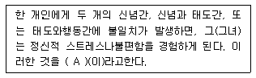
- 인지 부조화
- 지각 오류
- 귀인 현상
- 기대/성과 불일치
- 동화/대조 현상
(정답률: 알수없음)
5. 한 번 학습된 것은 다른 쪽으로도 전이되어 그곳의 학습을 돕는다는 것을 학습의 전이라고 한다. 학습의전이 유형에 해당하지 않는 것은?
- 수평적 전이
- 부정적 전이
- 인과적 전이
- 연속적 전이
- 수직적 전이
(정답률: 알수없음)
6. 조직에서의 커뮤니케이션 중 나쁜 뉴스를 전달하기 꺼려 아예 전달하지 않거나 누군가에게 그 임무를 전가시키는 현상을 무엇이라 하는가?
- 그레이프바인(Grapevine)
- 투사
- 고정관념
- 멈 이펙트(MUM effect)
- 루머(Rumor)
(정답률: 알수없음)
7. 동기부여에 관한 연구 중 인간이 어떤 과정을 거쳐 특정행동을 하는가에 초점을 맞춘 학자는 누구인가?
- 매슬로우(Abraham H. Maslow)
- 브룸(Victor H. Vroom)
- 엘더퍼(Clayton Paul Alderfer)
- 맥클랜드(David Clarence McClelland)
- 허즈버그(Frederick Herzberg)
(정답률: 알수없음)
8. 소매업체의 성과척도 중 점포 운영척도와 관련된 설명으로 가장 옳지 않은 것은?
- 매장관리자가 통제하는 결정적인 자원은 상품재고이다.
- 점포운영 생산성 척도에는 직원당 매출액이 포함된다.
- 감모손실, 에너지 비용을 통제하는 것도 포함한다.
- 무인판매대를 통해 노동생산성을 향상시키기도 한다.
- 매장 공간활용과 직원관리를 통해 생산성을 향상시키려 노력한다.
(정답률: 알수없음)
9. 목표관리(MBO)에서 목표에 관한 내용으로 가장 옳지 않은 것은?
- 사기진작을 위해 될 수 있는 한 쉬운 목표를 설정한다.
- 핵심사항을 중심으로 구체적인 목표를 설정한다.
- 목표 달성 시기를 구체적으로 명시한다.
- 단기간의 목표만을 지나치게 강조하지 않도록 유의한다.
- 가능하면 숫자로 측정 가능한 목표가 바람직하다.
(정답률: 알수없음)
10. 산업혁명 이후 변화해 온 노사관계의 발전과정이순서대로 올바르게 나열된 것은?
- 완화적노사관계 → 전제적관계 → 온정적관계 → 민주적노사관계
- 전제적관계 → 온정적관계 → 완화적노사관계 → 민주적노사관계
- 온정적관계 → 전제적관계 → 민주적노사관계 → 완화적노사관계
- 전제적관계 → 온정적관계 → 민주적노사관계 → 완화적노사관계
- 전제적관계 → 민주적노사관계 → 완화적노사관계 → 온정적관계
(정답률: 알수없음)
11. 학습조직에 대한 설명으로 옳지 않은 것은?
- 학습조직을 구축하기 위해서는 솔선수범하고 촉진하는 리더십이 요구된다.
- 학습조직은 일원학습(single-loop learning)을 하며, 실수가 발견되면 관행에 의해 교정이 이루어진다.
- 조직내의 규범에 도전하여 문제에 대해 아주 다른 해결책을 가져오기도 한다.
- 학습조직은 지속적으로 적응하고 변화하는 역량을 가진 조직이다.
- 학습조직은 조직의 정책, 목표, 표준 등에 대한 교정도 다룬다.
(정답률: 알수없음)
12. ( A )와 ( B )에 들어갈 용어로 올바르게 짝지어진 것은?
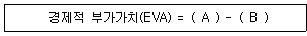
- 영업이익, 자기자본비용
- 세후순영업이익, 총자본비용
- 세후순영업이익, 자기자본비용
- 세후순영업이익, 타인자본비용
- 영업이익, 총자본비용
(정답률: 알수없음)
13. 운전자본관리의 목표로 옳지 않은 것은?
- 수익성과 유동성의 상반관계를 고려하여 적절한조화점을 찾는다.
- 유동자산을 가급적 최소한으로 유지한다.
- 기업의 유동성을 적절하게 관리하여 부도 등의 지급불능위험을 감소시킨다.
- 기업경영에 있어서 긴급한 악재에 대응한다.
- 단기부채와 장기부채의 최적구성을 유지한다.
(정답률: 알수없음)
14. 재고조사방법 중 계속기록법에 대한 설명으로 가장 옳지 않은 것은?
- 기말재고액은 기초재고액에 당기매입액을 합한 뒤 매출원가를 차감하여 계산한다.
- 저가상품을 대량으로 취급할 경우 유용하다.
- 장부상 재고기록이 정확하게 유지된다는 장점이 있다.
- 실지재고조사법보다 실무상 기록면에서 불편할 수 있다.
- 재고자산의 매출원가를 수시로 추정하는데 용이하다.
(정답률: 알수없음)
15. 김부장을 평가할 때 그의 성격이나 능력, 가치관 등을 통해서 그를 평가하지 않고 출신학교/학과, 출신지역, 종교 등에 따라 그를 판단하는 것과 가장 관련이 깊은 것은?
- 스테레오 타입(stereo type)
- 최근 효과(recency effect)
- 대조 효과(contrast effect)
- 후광 효과(halo effect)
- 자성적 예언(self-fulfilling prophecy)
(정답률: 알수없음)
16. 산업안전보건법에 따르는 정부의 책무에 해당하지 않는 것은?
- 사업장에 대한 재해 예방 지원 및 지도
- 사업장의 안전, 보건에 관한 정보 제공
- 산업재해에 관한 조사 및 통계의 유지, 관리
- 유해하거나 위험한 기계, 기구, 설비 및 물질 등에 대한 안전, 보건상의 조치기준 작성
- 안전, 보건의식을 북돋우기 위한 안전문화추진
(정답률: 알수없음)
17. 부정경쟁방지 및 영업비밀보호에 관한 법률에 적시된 용어에 대한 설명으로 옳지 않은 것은?
- 영업비밀이란 공공연히 알려져 있더라도 충분한 경제적 가치를 지닌 것으로서, 상당한 노력에 의하여 비밀로 유지된 생산방법, 판매방법 등의 정보를 말한다.
- 상품이 생산된 지역 외의 곳에서 생산된 것처럼 표시하여 오인하게 하는 것은 부정경쟁행위에 해당한다.
- 중대과실 또는 부정행위라는 것을 인지하지 못한 상태에서 영업비밀을 부정 취득하는 경우에도 침해행위에 해당된다.
- 도메인이름이란 인터넷상 숫자로 된 주소에 해당하는 숫자·문자·기호나 이들의 결합을 말한다.
- 타인이 제작한 제품소개서에 설명되어있는 상품을모방해도 부정경쟁행위에 해당된다.
(정답률: 알수없음)
18. 기업은 재무제표가 기업회계기준에 따라 적정하게 작성되었는지 감사를 받는다. 이 경우 감사보고서에 표기되는 감사의견과 가장 거리가 먼 것은?
- 적정의견
- 한정의견
- 부적정 의견
- 중도의견
- 의견거절
(정답률: 알수없음)
19. 인간의 인지스타일을 분류하는 유명한 기법 중의 하나인 MBTI와 관련된 내용으로 옳지 않은 것은?
- 마이어스(Myers)와 브리그(Briggs)에 의해 설문양식으로 발전되었다.
- 지각에 영향을 미치는 요소 2가지와 판단에 영향을 미치는 2가지를 결합해서 인간의 인지스타일을 4가지유형으로 분류하였다.
- 스위스의 유명한 심리학자인 칼 융(Carl Jung)의 성격유형 이론을 근거로 개발된 성격유형 선호지표이다.
- 지각에 영향을 미치는 요소로는 사고(thinking)와 느낌(feeling)으로 보고 있다.
- 인간의 성격을 다소 이분법적으로 구분한다는 단점이 있으나 쉽고 일상생활에 유용하게 활용할 수 있는분석기법이다.
(정답률: 알수없음)
20. 다양한 종업원 보상프로그램 중 부가 급부(fringebenefit)에 해당되지 않는 것은?
- 병가
- 유급휴가
- 연금제도
- 주식매입선택권
- 건강보험제도
(정답률: 알수없음)
2과목: 물류경영
21. 물류센터의 효과에 대한 내용으로 옳지 않은 것은?
- 효과적인 배송체제 구축
- 공장과 물류센터 간의 대량 및 계획운송을 통한운송비 절감효과
- 물류거점의 조정을 통해 중복운송이나 교차운송 방지
- 과잉재고 및 재고편재 방지
- 물류센터를 판매거점화 함으로써 제조업체의 직판체제 확립은 가능하나 유통경로는 복잡해지고 길어지는 문제 발생
(정답률: 알수없음)
22. 원거리 수배송품 포장 시 고려하여야 할 포장조건에 대한 설명으로 옳지 않은 것은?
- 포장할 물품의 성질 및 형태를 분석하여 그 물품에 적합한 포장양식을 고안하여야 한다.
- 취급 및 보관에 적합하도록 포장물을 안배하여 포장용기의 용적 및 중량을 적절하게 하여야 한다.
- 동종물품의 포장에 적합한 방법을 개발하여 지속적으로 사용하도록 하여야 한다.
- 외장상 화인 및 상품표기에 관한 자국이나 외국의법률 및 관습에 정통하여 문제가 발생하지 않도록 하여야 한다.
- 포장재료의 선택에 있어서는 내항성에 중점을 둘 필요는 없다.
(정답률: 알수없음)
23. 컨테이너 및 컨테이너 운송의 일반적인 장단점에 대한내용으로 옳지 않은 것은?
- 컨테이너 자체가 상품의 포장 역할을 하므로 포장비가 절감된다.
- 하역단계의 간소화에 따른 노동력이 절약된다.
- 화물의 기계적 처리로 인해 하역시간이 감소된다.
- 컨테이너 처리시설의 구축으로 초기에 거대자본의 투입이 필요하다.
- 컨테이너는 내구력이 취약하여 운송 중 풍량이나 풍우 등 기후상의 변동에 대해 안전을 기하기 힘들다.
(정답률: 알수없음)
24. 국제복합운송에 대한 설명으로 옳은 것은?
- 국가간 물품운송을 복수의 수송수단에 의해 항만에서항만까지 일관수송하는 수송방식이다.
- 독립된 단일의 복합운송인이 화주와 복수의 운송계약하에 복합운송서류를 발행한다.
- 둘 이상의 운송방식 가운데 반드시 해상운송이나 내수로운송이 포함되어야 한다.
- 화주에게 투명한 운임을 제공하기 위하여 전운송구간별로 운임을 분리하여 제시하여야 한다.
- 전운송구간 내지 전운송기간에 걸쳐 화물에 대해책임을 지는 전구간 단일운송책임을 원칙으로 한다.
(정답률: 알수없음)
25. 기업의 재고에 대한 설명으로 옳지 않은 것은?
- 생산단위원가를 낮추기 위하여 기업이 대량생산을 하므로 재고가 발생한다.
- 운송에 대한 규모의 경제를 실현하기 위하여 대량운송을 하기 때문에 기업의 재고가 발생한다.
- 원자재 부족으로 인한 생산중단을 피하기 위해기업은 일정 재고를 보유한다.
- 미래의 가격인상, 인도 지연, 파업 등 위험회피를 위해 기업은 재고를 보유한다.
- 기업 재무측면에서 자본효율을 높이기 위해 기업이재고수준을 높이는 것을 선호하기 때문이다.
(정답률: 알수없음)
26. 영업창고는 소매상, 도매상, 제조업자 등이 임대한창고이며, 자가창고는 자가가 소유한 창고이다. 영업창고와 자가창고의 비교 설명으로 옳지 않은 것은?
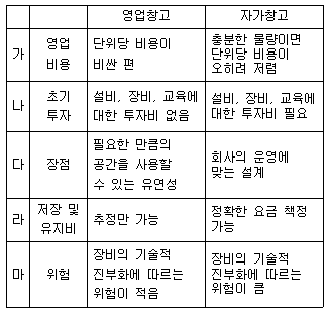
- 가
- 나
- 다
- 라
- 마
(정답률: 알수없음)
27. 부분최적화(suboptimization)는 어느 일부분의 기능만이 최적화 되어 전체적인 측면에서는 유익하지 못한 결과를 낳는 경우를 의미한다. 부분최적화의 사례로 옳지 않은 것은?
- 재고수준을 낮춰 창고비를 감소시키는 것은 고객서비스 수준을 저하시킬 수 있다.
- 배송리드타임을 줄이는 것은 대고객 서비스 수준을 증가시키지만 수송비를 높이기 때문에 총비용을 증가시키게 된다.
- 대고객 서비스 수준을 높이는 것은 재고량과 재고유지비의 증가라는 부정적 결과를 초래한다.
- 재고수준을 낮추면 구매담당자가 대량구매로 할인을 받을 수 있는 기회를 박탈하기 때문에 효율적인구매를 할 수 없다.
- 낮은 수송비를 추구하는 것은 재고량의 감소 및 대고객 서비스 수준의 저하와 맞물려 있다.
(정답률: 알수없음)
28. 물류관리자는 재고비용을 고려하여 재주문량, 재주문시기, 안전재고량 등에 대한 의사결정을 해야 한다. 이에 대한 설명으로 옳지 않은 것은?
- 적정 재주문량은 재고유지비, 주문비, 재고부족비를 함께 고려하여 결정하는데 각 비용항목들을 합한 총재고비용이 최소가 되는 점이 최적주문량이 된다.
- 재주문 결정에서 다음 재주문결정까지의 경과시간을 고려하여 재주문 시점을 결정해야 한다.
- 부패성품목의 점검기간은 대체로 짧은 편이며 대형품목의 잦은 재주문은 단위당 수송비용을 감소시킬 수 있다.
- 완전한 수요예측은 불가능하기 때문에 수요 변동을 고려하여 안전재고를 유지해야 한다.
- 재고부족에 신속히 대응하지 못하면 고객은 다른 거래처를 찾기 때문에 여분의 안전재고를 유지할 필요가 있다.
(정답률: 알수없음)
29. 다음 괄호 안에 들어갈 수 있는 용어를 순서대로 옳게 나열한 것은?
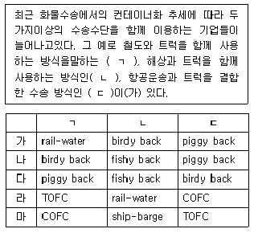
- 가
- 나
- 다
- 라
- 마
(정답률: 알수없음)
30. 항공운송에 관한 설명으로 가장 옳지 않은 것은?
- 항공물류의 효율화를 위해 항공화물을 항공용 컨테이너와 파렛트 등을 이용하여 탑재한다.
- 항공용 컨테이너와 파렛트 등의 기기를 ULS(UnitLoad System)라고 지칭한다.
- 벌크탑재방식은 여객기 객실의 밑바닥 화물실에 개별화물을 인력에 의해 적재하는 방식을 말한다.
- 컨테이너 탑재방식은 항공 컨테이너를 이용하여 화물을 적재하는 방식이다.
- 항공주선업자는 항공사가 발행하는 Master AWB에 의해 자신을 송하인으로 하여 항공사의 운송약관에 의한 운송계약을 체결해야 한다.
(정답률: 알수없음)
31. 다음 글상자에서 설명하는 것의 특징으로 옳지 않은 것은?
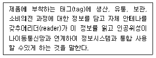
- 품목이 한 지점에서 다른 지점으로 이동할 때 태그내부에 저장되어 있는 정보를 실시간으로 갱신할 수 있다.
- 비금속물질을 투과해서 읽을 수 있다.
- 한 번에 한 개의 태그만 인식 가능하다.
- 판독시간이 빠른 편이다.
- 판독기에 직접 접촉해야 할 필요가 없다.
(정답률: 알수없음)
32. 재고의 공간적 배치와 관련된 기능으로, 물류거점별로소비자의 요구에 부응하는 형태별 분류와 배송을 가능하게 해 주는 관리의 기능은?
- 유통가공기능
- 경제적발주기능
- 운송합리화기능
- 수급적합기능
- 생산의 계획 및 평준화기능
(정답률: 알수없음)
33. 서로 다른 업종의 기업간에 공동집배송을 시행할 경우 유의해야 할 점으로 옳지 않은 것은?
- 정보시스템의 특성이 유사한 경우에 활용하기가 더 유리하다.
- 상품특성에 유사성이 있어야 한다.
- 보관특성이 유사한 경우가 좋다.
- 하역특성이 유사한 경우가 좋다.
- 집배송의 지역적 특성은 고려하여야 하나, 배송처(화주)가 서로 멀리 떨어져 있는 경우에 더 효과적이다.
(정답률: 알수없음)
34. 극동지역에서 벤쿠버 또는 시애틀까지 해상운송하고 캐나다 철도를 이용하여 몬트리올까지 운송한 다음해상운송을 이용하여 유럽까지 운송하는 복합운송체제로 옳은 것은?
- SLB(Siberian Land Bridge)
- CLB(Canadian Land Bridge)
- MLB(Mini Land Bridge)
- TCR(Trans China Rail)
- IPI(Interior Point Intermodal)
(정답률: 알수없음)
35. 제조업체로부터 공급 요청을 받은 공급처가 원자재를 포장하여 제조업체의 자재창고까지 수송 및 배송을 하고, 제조업자가 입고된 원자재를 자재창고에 보관 및 재고 관리하는 단계까지의 물류를 일컫는 용어는?
- 생산물류
- 조달물류
- 사내물류
- 판매물류
- 역물류
(정답률: 알수없음)
36. 보관의 원칙에 대한 설명으로 옳지 않은 것은?
- 높이 쌓기의 원칙 : 물품을 고층으로 적재하는 것으로 파렛트 등을 이용하여 용적효율을 향상
- 위치표시의 원칙 : 보관품의 장소와 선반 번호 등의 위치를 표시함으로써 업무의 효율화 증대
- 명료성의 원칙 : 시각적으로 보관품을 용이하게 식별할 수 있도록 보관하는 원칙
- 네트워크 보관의 원칙 : 물품의 정리와 출고가 용이하도록 관련 품목을 한 장소에 모아서 보관하는 원칙
- 통로대면보관의 원칙 : 보관할 물품의 장소를 회전정도에 따라 정하는 것으로 입출하 빈도의 정도에 따라 보관 장소 결정
(정답률: 알수없음)
37. 아래 모형에 대한 내용으로 옳지 않은 것은?
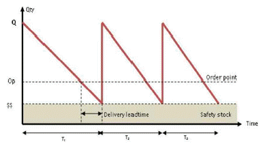
- 재고시스템은 주문시기(Time)와 주문량(Q)을 어떻게 결정하느냐에 따라 고정주문량모형과 정기주문량모형으로 구분되는데 위의 모형은 고정주문량 모형이다.
- 재고수준이 미리 정해진 재주문점 Op에 도달하면일정한 양만큼 주문한다.
- 재고수준이 재주문점에 도달했는지를 알기 위해 계속적으로 재고수준을 검토해야 하므로 지속적 재고검토시스템 (continuous review system)이라고도 한다.
- 수요변화에 따라 일정한 양만큼 주문하며 주문량은 조달기간(Delivery leadtime)이 지나면 입고된다.
- 수요변화에 따라 재고수준이 ss에 도달하는 시간간격은 항상 일정하기 때문에 주문 간격이 일정하다.
(정답률: 알수없음)
38. 다음 글상자에서 설명하는 바코드의 마킹 방식은?
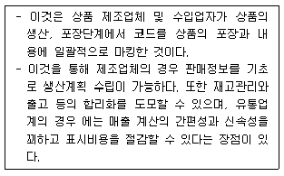
- 인스토어 마킹(Instore marking)
- 소스 마킹(Source marking)
- 쉬핑 마크(Shipping mark)
- 건현표(Freeboard mark)
- 마크업(Mark-up)
(정답률: 알수없음)
39. 다음 글상자안의 내용이 의미하는 개념의 목적 및 장점에 포함되지 않는 것은?
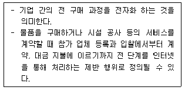
- 거래비용의 절감
- 분산구매를 통한 가격 하락
- 구매자의 생산성 향상
- 매버릭(Maverick) 구매의 감소
- 구매, 배송 과정에서의 불필요한 행정 절차와 실수의 감소
(정답률: 알수없음)
40. 필름을 이용한 포장에 대한 설명으로 옳지 않은 것은?
- 딱딱한 상자를 대체하기 위해 유연한 포장을 사용하며 최근에는 캔, 병 등과 같은 소비재 포장을 위한 출하케이스를 만들 때도 사용되고 있다.
- 포장비용이 비싸며 자동화가 불가능하다.
- 필름 롤을 가지고 제품 형태에 맞출 수 있기 때문에 제품에 맞추기 위해 여러 가지 형태의 상자를 가질 필요가 없다.
- 보관에 필요한 공간이 줄어들 수 있다.
- 정사각형이나 원형의 제품에 적용하기가 쉬운 편이지만의자나 소파 같은 비정형 가구 같은 제품에는 필름보다 담요로 싸는 방식이 더 적합하다.
(정답률: 알수없음)
3과목: 상권분석
41. 상가를 신설하기 위해 기존의 건물을 인수하기로 했다. 면적이 2,000m2의 대지위에 건물은 A동, B동으로 총2개동이다. A동은 각 층의 면적이 200m2인 지상3층과 지하1층, B동은 각 층의 면적이 300m2인 지상6층과 지하2층으로 구성되어 있다. 이 때의 용적률은 얼마인가? (단, 건물외부에 200m2의 지상주차장(건물부속)이 있고 건물내부 주민공동시설 면적의 합이 200m2임)
- 100%
- 110%
- 120%
- 140%
- 160%
(정답률: 알수없음)
42. 허프모델과 같은 확률적 상권분석방법에서 이용하는 점포선택 등 확률선(isoprobability contours)을 통해 파악할 수 있는 내용으로 가장 옳지 않은 것은?
- 1차상권, 2차상권, 한계상권의 확인
- 거리에 따른 점포선택확률 감소현상
- 점포별 상권잠식현상
- 유동인구의 흐름 확인
- 소매점포의 경쟁자 확인
(정답률: 알수없음)
43. 점포가 위치한 곳과 거리에 따라 상권을 구분할 때 각상권의 개념과 특성을 상대적으로 비교설명한 내용으로 옳지 않은 것은?
- 1차상권은 전체상권 중에서 점포에 가장 가까운 지역을 말하는데 매출액이나 소비자의 수에서 일반적으로60% 정도를 차지하는 지역으로 그 비율은 절대적이지 않다.
- 2차상권은 1차상권을 둘러싸는 형태로 주변에 위치하며 소비자의 일정비율을 추가로 흡인하는 지역이다.
- 3차상권은 소비자의 내점빈도가 비교적 낮으며 1,2차 상권에 비해 주변에 위치한 경쟁점포들과 상권 중복 또는 상권잠식의 가능성이 낮은 지역이다.
- 1차상권이 중요한 이유는 소비자의 밀도가 가장 높은 곳이고 소비자의 충성도가 높으며 1인당 판매액이 가장 큰 핵심적인 지역이기 때문이다.
- 3차상권은 상권으로 인정하는 한계(fringe)가 되는 지역범위이며 지역적으로 넓게 분산되어 고객의 밀도가 낮다.
(정답률: 알수없음)
44. 회귀모델을 이용하여 상권분석을 보다 정교하게 하려고 한다. 이 때 참고해야 하는 내용으로 옳지 않은 것은?
- 신규점포를 분석하는 경우에는 해당 신규점포와 비슷한 상권특성을 가진 표본 점포들에서 수집한자료일수록 유리하다.
- 풍부한 분석경험과 분석자료가 축적되어 있는 경우 이를 토대로 점포성과에 영향을 미치는 적절한 변수들을 선택할 가능성이 커진다.
- 회귀모델의 장점은 점포내외의 물리적 입지조건, 점포이미지, 상권특성 등 다양한 변수들을 설명변수로 적용할 수 있다는 것이다.
- 회귀분석에 최대한 많은 설명변수를 투입할수록 설명력과 예측력을 높이고, 의사결정의 질을 높일 수 있다.
- 회귀모델에 투입되는 설명변수들은 상호연관성이 높은 경우가 많기 때문에 다중공선성의 문제를해결해야 한다.
(정답률: 알수없음)
45. 상권 매력도를 평가할 때 평가요인이 되는 역외구매(outshopping)에 대한 내용으로 옳지 않은 것은?
- 역외구매란 해당지역에 거주하는 소비자들이외부지역에서 구매하는 현상을 말한다.
- 해당 지역의 가구당(혹은 1인당) 예상지출액과 실제지출액이 차이를 유발한다.
- MEP가 높으면 역외구매 현상이 많아 신규수요창출가능성이 크다고 본다.
- 해당 지역과 타지역간 소매점의 마케팅능력 차이는 반영되지 않는다.
- 교통수단의 발달은 소비자의 이동가능성을 높여 역외구매현상을 촉진한다.
(정답률: 알수없음)
46. 다점포 소매네트워크의 설계, 신규점포 추가시의영향분석, 기존점포의 재입지 및 폐점 등의 상황을 분석할 때 입지배정모형이 활용될 수 있다. 이 모형의5가지 주요 구성요소에 해당하지 않는 것은?
- 지점간 거리자료
- 배정규칙
- 수요지점
- 교통량자료
- 실행가능한 부지
(정답률: 알수없음)
47. 효율적인 상권분석을 위해 상권을 방문하는 소비자의 구매행동에 대해 이해해야 한다. 소비자 구매행동에 대한 내용으로 옳지 않은 것은?
- 소비자 구매동기 중 개인적 동기에는 역할수행, 기분전환, 자기만족, 육체적 활동 등이 있다.
- 소비자 구매동기 중 사회적 동기에는 사교적 경험, 동류집단의 흡인, 흥정의 즐거움 등이 있다.
- 앵커점포(anchor store)는 소비자들을 지속적으로 끌어들이는 역할을 하며 쇼핑센터에서는 백화점 등이 이러한 역할을 수행한다.
- 전통적 번화가나 쇼핑센터의 결절점에 위치한 점포들은 준거지점으로 인식되며 다른 점포들보다 더 쉽게 기억된다.
- 쇼핑센터내에서 소비의 촉매역할을 하는 2차 유인점포에는 백화점, 대형식품점 등이 해당된다.
(정답률: 알수없음)
48. 용도지역 및 용도지구에 대한 설명으로 옳지 않은 것은?
- 건폐율은 대지면적에 대한 건축면적의 비율로서 건축물의 과밀을 방지하고자 설정된다.
- 용적률은 대지면적에 대한 연면적의 비율을 의미한다.
- 도시지역의 용도지역은 주거지역, 상업지역, 공업지역, 녹지지역으로 구분된다.
- 용도지역은 중첩하여 지정될 수 있는 반면 용도지구는 중첩하여 지정될 수 없다.
- 개발진흥지구는 주거, 상업, 공업, 유통물류, 관광휴양 등의 기능을 집중적으로 개발·정비하기 위해 지정된다.
(정답률: 알수없음)
49. 체인점의 도미넌트(dominant)출점전략에 대한 설명으로 옳지 않은 것은?
- 일정지역을 대상으로 무계획적으로 소수의 점포를 출점시킴으로써 단기간에 그 지역의 시장점유율을 높이려는 전략이다.
- 도미넌트 출점전략의 효과를 높이기 위해서는 점포규모의 표준화가 필요하다.
- 도미넌트 출점전략의 효과를 높이기 위해서는 상품구색과 매장구성의 표준화가 필요하다.
- 도미넌트 출점전략은 주요 간선도로를 따라 출점하는 선적전개와 주택지역 등을 중심으로 전개하는 면적전개로 구분된다.
- 도미넌트 출점전략은 지명도 향상, 물류비 감소, 경쟁자의 출점가능성 감소 등의 장점을 갖는다.
(정답률: 알수없음)
50. 소비자의 점포선택확률을 계산할 수 있는 상권분석기법 중 하나로서 소비자의 개인별자료(disaggregate data)나 점포이미지 등 다양한 변수를 반영할 수 있는 분석기법은?
- Huff모델
- MCI모델
- MDS모델
- Luce모델
- MNL모델
(정답률: 알수없음)
51. 상권분석의 유용한 도구인 지리정보시스템(GIS)에 대한설명으로 옳지 않은 것은?
- 버퍼(buffer)는 어떤 지도형상, 즉 점이나 선 혹은 면으로부터 특정한 거리이내에 포함되는 영역을 의미하며 상권 혹은 영향권을 표현하는데 사용될 수있다.
- 위상은 공간적으로 동일한 경계선을 가진 두 지도 레이어들에 대해 하나의 레이어에 다른 레이어를 겹쳐 놓고 지도 형상과 속성들을 비교하는 기능이다.
- 프리젠테이션 지도 작업은 지도상에 지리적인 형상을 표현하고 데이터의 값과 범위를 지리적인 형상에 할당하고 지도를 확대·축소하는 등의 기능이다.
- 주제도 작성은 속성정보를 요약하여 표현한 지도를 작성하는 것이며 면, 선, 점의 형상으로 구성된다.
- 데이터 및 공간조회는 지도상에서 데이터를 조회하여 표현하고, 특정 공간기준을 만족시키는 지도를 얻기 위해 지도를 사용하는 것이다.
(정답률: 알수없음)
52. 특정지역의 개략적인 수요를 측정하기 위해 사용되는 구매력지수(BPI)를 계산하는 과정에서 필요한 자료로 가장 옳지 않은 것은?
- 전체 지역의 인구수(population)
- 해당 지역의 인구수(population)
- 해당 지역의 소매점면적(sales space)
- 해당 지역의 소매매출액(retail sales)
- 해당 지역의 가처분소득(effective buying income)
(정답률: 알수없음)
53. 인구 9만명인 도시 A와 인구 1만명인 도시 B 사이의 거리는 20Km이다. Converse의 공식에 의하면 두 도시간의 상권경계(상권분기점)는 도시 A로부터 몇 Km떨어진 곳이 되는가?
- 10 Km
- 5 Km
- 15 Km
- 12 Km
- 8 Km
(정답률: 알수없음)
54. 입지대안 평가 시 사용되는 원칙에 대한 설명이다. 어떤 원칙에 해당하는가?
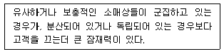
- 동반유인원칙(principle of cumulative attraction)
- 이용가능성의 원칙(principle of availability)
- 고객차단원칙(principle of interception)
- 점포밀집의 원칙(principle of store congestion)
- 접근가능성의 원칙(principle of accessibility)
(정답률: 알수없음)
55. 사람이 주동선(主動線) 보다 뒷골목 같은 부동선(副動線) 을 이용하게 되는 경우가 많은데, 이러한 현상을 설명하고 있는 원칙은 무엇인가?
- 득실을 따져 득이 되는 쪽을 선택하는 보증실현의 원칙
- 길건너편 정면에 점포가 있어도 자신이 진행하려는 방향이 아닌 점포로는 가려고 하지 않는 목적진행의 원칙
- 최단거리로 목적지까지 가고자 하는 최단거리 추구의 원칙
- 위험하거나 잘 모르는 길을 지나지 않으려는 안전추구의 원칙
- 사람이 운집한 곳을 선호하는 인간집합의 원칙
(정답률: 알수없음)
56. 입지배정모델(location-allocation model)의 특성 및 용도와 관련된 항목으로 옳지 않은 것은?
- 재화 및 서비스에 대한 소비자 수요의 공간적 분포예측
- 기존 상권에 신규점포 추가시의 효과 분석
- 상권내에 위치하고 있는 기존점포의 재입지 및 폐점결정
- 일정 상권에 복수의 점포를 배치하는 소매점네트워크 설계
- 기존 상권에 관한 정보를 바탕으로 상권내개설점포의 수 결정
(정답률: 알수없음)
57. 도매상권과 소매상권의 차이에 대한 설명으로 옳은 것은?
- 도매상권은 소매상권과는 달리 산업의 구조나 경기변동에 영향을 적게 받는다.
- 도매상권은 소매상권과는 달리 집하권(集荷圈) 또는 판매권(販賣圈)에 해당한다.
- 도매상권은 소매상권과는 달리 경쟁기업의 입지에 별 영향을 받지 않는다.
- 도매상권은 광역상권이고 소매상권은 전국상권이다.
- 도매상권은 소매상권과는 달리 물류나 교통체계의 영향을 적게 받는다.
(정답률: 알수없음)
58. 도심형입지(CBD)에 대한 설명으로 옳지 않은 것은?
- 정보, 자본관련 중추관리기능이 대량으로 집적되는 장소이다.
- 주간과 야간에 주변 인구의 밀도가 크게 차이나는 경우가 많다.
- 하나 이상의 백화점, 전문점 및 편의점 등 업태와 업종이 결집되어 있다.
- 근린 소매중심지이며 인구가 분산, 산재되어 있는 경우가 많다.
- 관청이나 기업, 은행 등 여러 종류의 성격을 지닌 건물이 주변에 많다.
(정답률: 알수없음)
59. 상권과 입지를 구분하여 설명한 내용으로 옳지 않은 것은?
- 상권은 범위(boundary), 입지는 지점(point)으로 비유하여 표현하기도 한다.
- 상권의 평가항목에는 소비자의 분포범위, 유효수요의 크기, 가시성 등이 있다.
- 상권은 점포의 매출이 발생하는 지역범위로 볼 수 있다.
- 입지의 평가항목에는 주차장, 지형, 층수, 편의시설, 층고, 임대료 등이 있다.
- 상권의 크기는 입지의 매력도에 따라 커지므로 서로비례관계가 성립한다.
(정답률: 알수없음)
60. 아래 내용은 상가용 건물의 공간구성과 관련한 요소들 중 어떤 것에 대한 설명인가?
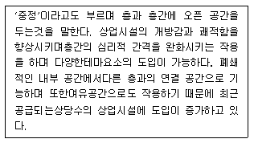
- 통로(path)
- 결절점(node)
- 보이드(void)
- 데크(deck)
- 선큰(sunken) 유통마케팅
(정답률: 알수없음)
4과목: 유통마케팅
61. 유통업체의 고객관계관리(CRM)와 관련이 없는 것은?
- 고객 유지(customer retention)
- 일대일 마케팅(one-to-one marketing)
- 대량고객화(mass customization)
- 교차판매(cross-selling)
- 신용조건(credit term) 조정
(정답률: 알수없음)
62. 점내 통로 설계에 대한 내용으로 가장 옳지 않은 것은?
- 상품군의 구분과 상품 배열을 고려하여 계획해야한다.
- 바닥의 색채는 점내와 조화를 이루게 하고 너무 자극적인 것은 피한다.
- 통로에는 장식이나 진열상품 등에 의한 장애나 저항감이 없도록 한다.
- 주통로와 연결된 보조통로를 미로 같이 설계하여 고객이 매장에 장시간 머무르게 해야 한다.
- 매장 내 통행에 방해를 주지 않는 위치에 쉼터를 만들고 위치를 적절히 표시해야 한다.
(정답률: 알수없음)
63. 점포설계를 위해 고려해야 할 사항으로 가장 옳지 않은 것은?
- 점포의 외장, 간판, 통로, 쇼윈도우 등의 요소들이유기적인 통일성을 이루도록 설계해야 한다.
- 점포 외장을 통해 업종 및 업태별 특징을 감각적으로 표시하는 것이 좋다.
- 점외 간판은 점포명을 알림과 동시에 고객을 점포로 유도 및 안내할 수 있도록 해야 한다.
- 점내 간판은 화려한 디자인이나 재료를 사용하여 상품을 돋보이게 해야 한다.
- 쇼윈도우는 개성있으면서 취급 상품에 적합하도록 기획하는 것이 좋다.
(정답률: 알수없음)
64. 소매 서비스의 품질을 개선하기 위한 갭분석 모형에서 설명하는 서비스 격차(gap)의 종류와 그 내용으로 옳지 않은 것은?
- 시장정보 갭 : 고객이 기대하는 바와 기업이 고객의 기대를 바라보는 인식의 차이에서 발생
- 서비스 기준 갭 : 기업이 고객의 기대를 만족시키기 위한 서비스 기준 및 시행지침을 잘못 설정하여 발생
- 서비스 성과 갭 : 종업원들이 적절한 매뉴얼과 지침에 따라 제대로 서비스를 이행하지 못하여 발생
- 커뮤니케이션 갭 : 고객에게 전달된 서비스가 그 서비스에 대한 외부 커뮤니케이션과 차이가 날 때 발생
- 서비스 회복 갭 : 고객의 불만 원인에 대한 이해와 그 처리가 고객이 기대하는 바와 달라서 발생
(정답률: 알수없음)
65. 재고자산 평가방법 중 하나인 매가환원법에 대한 설명으로 옳지 않은 것은?
- 매가에 의한 기말 재고 조사 후 원가율을 이용하여 재고원가를 산출한다.
- 단품 단위의 이익률을 정확하게 추적할 수 있어 상품의 공헌과 기여 정도를 분석할 수 있다.
- 백화점, 할인점 및 편의점 등 취급 품목이 많은 소매업이 주로 사용하는 방식이다.
- 마크업, 마크다운 그리고 마진율 등을 인공적으로 수정할 수 있다는 단점이 있다.
- 재고 평가가 현 시장 평가이며 월간단위 또는 연간단위 관리 시 간편하다는 장점이 있다.
(정답률: 알수없음)
66. 파블로프(Pavlov)의 고전적 조건화 이론을 판매촉진에 적용할 때, 고객에게 제공되는 세일(sale)이나 가격할인은 어느 것에 해당하는가?
- 무조건 자극(unconditioned stimulus)
- 조건 자극(conditioned stimulus)
- 중성 자극 (neutral stimulus)
- 긍정적 강화 자극(positive reinforcement stimulus)
- 부정적 강화 자극(negative reinforcement stimulus)
(정답률: 알수없음)
67. 단속형 거래와 관계형 거래를 비교한 내용으로 옳지 않은 것은?
- 단속형 거래는 단순한 요구나 제안으로부터 의무조항이발생하지만, 관계형 거래는 기존 거래관계, 상관습, 법률에 의해 형성된 약속에 따른다.
- 단속형 거래는 권리와 의무 등이 완전 양도 가능하지만, 관계형 거래는 제한적으로 양도가능하다.
- 단속형 거래는 거래처에 대한 상대적 의존도가 높지만, 관계형 거래는 상대적 의존도가 낮다.
- 단속형 거래는 거래처를 단순고객으로 보지만, 관계형 거래는 동반관계로 본다.
- 단속형 거래는 이익과 부담이 명확하게 분할되지만, 관계형 거래는 일부 이익과 부담을 공유한다.
(정답률: 알수없음)
68. 저관여제품의 소비자 구매특징 및 유통전략으로 가장 옳지 않은 것은?
- 저관여제품의 구매는 짧은 시간 내에 적은 정보를 근거로 결정된다.
- 주로 단가가 싸고 셀프서비스로 판매될 수 있는 제품들이다.
- 비누, 치약, 샴푸 등의 생필품은 소비자의 ‘동반구매욕구’가강하다.
- 한정된 품목에서 다양한 모델을 갖춘 카테고리 킬러가주 유통업태가 된다.
- 저관여제품은 소비자의 원스톱 쇼핑의 욕구를 충족시켜주는 것이 중요하다.
(정답률: 알수없음)
69. 마케팅 커뮤니케이션 수단에 대한 설명으로 옳지 않은 것은?
- 인적판매는 광고에 비해 메시지를 상황에 따라 조절할 수 있다.
- 광고는 인적판매에 비해 노출당 경제성이 뛰어나지만 설득효과가 떨어지는 단점이 있다.
- 퍼블리시티(publicity)는 언론에 대한 신뢰성으로 인해제품속성에 대한 믿음을 형성하는데 기여한다.
- 판매촉진은 광고에 비해 비용은 많이 소요되고 실질적인 혜택을 주지 못하지만, 브랜드 이미지를 향상시키는데 효과적이다.
- 스폰서십(sponsorship)은 특별한 이벤트 등에 자사의 이름을 붙임으로써, 광고의 매체혼잡을 피할 수 있다.
(정답률: 알수없음)
70. 표적시장을 선정하기 위해 고려해야 할 요소에 해당하지 않는 것은?
- 미래의 성장 잠재력과 이익 잠재력
- 현재시장의 크기와 매력도
- 경쟁강도와 소요되는 투자액
- 시장의 욕구를 충족시킬 수 있는 능력
- 집단내 이질성과 집단간 동질성
(정답률: 알수없음)
71. 고객관계관리(CRM)에 대한 설명으로 옳지 않은 것은?
- 대응식 고객불만 해결에서 예방식 문제해결로 전환이 가능하다.
- 개별 고객과의 상호작용을 향상시키는 기능이 있다.
- 고객의 생애가치를 중시하고 고객점유율을 높이는 것을 목표로 하고 있다.
- 고객의 예상되는 불만을 사전에 제거함으로써 ‘고객의 획득’을 주요목적으로 하는 시스템이다.
- ‘판매 후 서비스’ 뿐만 아니라 ‘판매전 서비스’ 의 제공도 가능하다.
(정답률: 알수없음)
72. TV홈쇼핑의 장점으로 옳지 않은 것은?
- 소비자들이 집에서 주문하고, 배송 받을 수 있는 편리한 유통시스템이라고 할 수 있다.
- 점포소매업에 비해 고객에게 접근하는데 있어서 공간적 제약이 적다.
- 일반 공중파방송과는 달리 고객으로부터 제품판매에 관한 직접반응을 기대할 수 있다.
- 정보기술의 발달로 상품에 대한 시각적, 청각적 특징을 제시할 수 있으므로 점포소매업에 비해 소비자들의 지각적 위험이 낮다.
- 지리적 한계를 극복할 수 있으므로 생산과 소비사이의 공간적 분리를 잘 해소할 수 있다.
(정답률: 알수없음)
73. 다음 글 상자에서 설명하는 이것은 무엇인가?
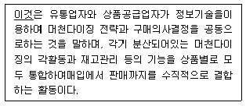
- 공급사슬관리
- 상품믹스관리
- 전략적 재고관리
- 카테고리관리
- 단품관리
(정답률: 알수없음)
74. 유통업체 브랜드(private brand : PB)의 성장이 유통경로에 미치는 영향으로 옳지 않은 것은?
- 제조업체와의 파워게임에서 유통업체가 유리해지고, 유통업의 제조업 지배현상이 강화될 것이다.
- 소비자시장에 주력했던 과거와는 달리 많은 공급업자들이 대규모 주요 소매상에 대한 마케팅에 더 많은 비중을 두게 되었다.
- 제조업체 브랜드와의 지나친 경쟁으로 유통질서가 혼탁해지는 반면, 소비자보호에는 도움이 된다.
- 중간상의 머천다이징 기능이 강화되고 소비자물가안정에도 도움을 줄 수 있다.
- 소비자들의 합리적인 구매성향이 강화되고 가치추구구매행동이 확산될 것이다.
(정답률: 알수없음)
75. 글상자에서 설명하고 있는 서비스 방식은 무엇인가?
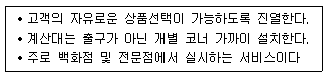
- 셀프 서비스(self service) 방식
- 준 셀프서비스(semi self service) 방식
- 자기선택 서비스(self selection service) 방식
- 신용서비스(credit service) 방식
- 자동판매기(vending machine service) 방식
(정답률: 알수없음)
76. 촉진의 기본적 4가지 수단들의 상대적 특징을 비교한아래 글상자의 ( A ), ( B ), ( C ), ( D )에 들어갈 내용이 가장 올바르게 나열된 것은?
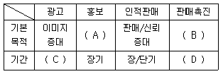
- 신뢰형성 - 관계형성 - 장기 - 단기
- 관계형성 - 신뢰형성 - 장기 - 단기
- 신뢰형성 - 관계형성 - 단기 - 장기
- 신뢰형성 - 매출증대 - 장기 - 단기
- 관계형성 - 매출증대 - 장기 - 장기
(정답률: 알수없음)
77. 다음 글상자 안의 사례에서 나타난 상품매입과 관련된 비윤리적/법률적 문제가 될 수 있는 행위 또는 용어는 무엇인가?
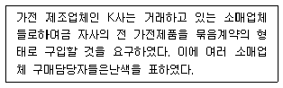
- 역청구(chargebacks)
- 역매입(buybacks)
- 독점 거래 협정(exclusive dealing agreements)
- 구속적 계약(tying agreements)
- 입점비(slotting allowances)
(정답률: 알수없음)
78. 다음 사례의 A사는 소비자의 가격탄력성에 영향을 미치는 어떠한 효과를 주로 이용한 것인가?
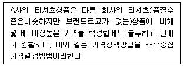
- 난이한 비교 효과(difficult comparison effect)
- 편익/가격 효과(benefits/price effect)
- 총지출 효과(total expenditure effect)
- 상황효과(situation effect)
- 대체 인식 효과(substitute awareness effect)
(정답률: 알수없음)
79. 프랜차이즈 본부가 프랜차이즈 가맹점에게 제공하는 서비스를 초기 서비스와 지속적 서비스(ongoingservice)로 구분할 때, 지속적 서비스에 해당되는 것은?
- 리스협상 조언
- 입지개발 및 운영시스템 제공
- 설비 배치
- 상권 분석
- 머천다이징
(정답률: 알수없음)
80. 다음의 내용은 무엇을 설명하는 것인가?
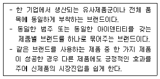
- 기업 브랜드(corporate brand)
- 패밀리 브랜드(family brand)
- 개별 브랜드(private brand)
- 내셔널 브랜드(national brand)
- 브랜드 수식어(brand modifier) 유통정보
(정답률: 알수없음)
5과목: 유통정보
81. 다음 글상자의 내용을 포괄하는 가장 적절한 용어는?
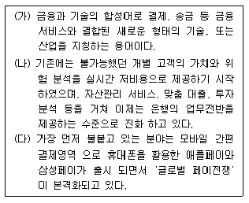
- 온덱
- EBPP
- 아마존 웰렛
- 스마트 카드
- 핀테크
(정답률: 알수없음)
82. 화물유통과 관련한 VAN(Value Added Network)의 기능으로 가장 옳지 않은 것은?
- 화물 추적관리
- 수발주 데이터 교환
- 재고정보 교환
- 판매정보 수집관리
- 송장 수집 및 축적관리
(정답률: 알수없음)
83. 노나카는 조직의 지식창출과정을 SECI모형으로 설명하고 있으며 나선형으로 진화되어짐을 보이고 있다. 나선형진화과정 중, 개인과 개인이 대면접촉을 시작하는 과정으로 지식생성이 이루어지는 과정은?
- 사회화(Socialization)
- 외부화(Externalization)
- 개인화(Personalization)
- 내면화(Internalization)
- 종합화(Combination)
(정답률: 알수없음)
84. 다음 글상자에서 설명하고 있는 용어로 가장 적절한 것은?
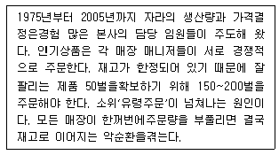
- 클라우드 컴퓨팅
- 사물인터넷
- 롱테일의 법칙
- 빅데이터
- 채찍효과
(정답률: 알수없음)
85. e-비즈니스 시스템의 필수적인 구성요소의 하나인 머천트(Merchant)시스템의 역할로서 가장 거리가 먼 것은?
- 상품 전시 기능
- 가격 표시 기능
- 상품 검색 기능
- 장바구니 기능
- 전자 지불처리 기능
(정답률: 알수없음)
86. 인터넷 마케팅 가격 전략의 유형에 대한 내용으로 가장 옳지 않은 것은?
- 저가화 전략 : 인터넷상에서 고객들이 제품가격을 쉽게 비교할 수 있으므로 제품을 제공하는 기업은배달비용을 포함하여 다른 경쟁업체에 비해 더욱 싼 가격을 결정하는 것이 중요하다.
- 무료화 전략 : 인터넷 상에서 상당수의 서비스가 무료로 제공되며 무료사이트를 사용하는 고객은 해당사이트에 접속할 때마다 웹사이트가 제공하는 다양한 형태의 광고를 보게 되며, 이러한 웹사이트의 광고는 수익원이 될 수 있다.
- 역가화전략 : 인터넷 마케팅환경에서는 고객중심적차원에서 가격을 결정하는 전략이다.
- 유가화 전략 : 고객에게 웹사이트를 이용하는 만큼 부가적인 보너스나 포인트를 제공하는 극단적인형태의 가격전략이다.
- 유료화 전략 : 기업은 경쟁사와의 차별화된 독특한 컨텐츠를 제공함으로써 유료화 전략을 전개한다.
(정답률: 알수없음)
87. 다음 글상자는 라파(Rappa)가 제시한 9가지 비즈니스모델 중 중개형 모델의 하나로서 무엇에 관한 설명인가?
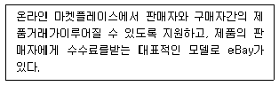
- 메타중개
- 고객모집형
- 항목분류형
- 경매중개
- 역경매
(정답률: 알수없음)
88. 다차원 DB분석기법의 하나로 사용자가 ‘매출액 모델’을 분석하는 과정에서 ‘강남’매장에서 ‘제습기’의 매출액이 급격히 증가하고 있음을 발견하여, 각 매장별로 제습기의 재고량을 파악하고 매장 간 재고량을 조정할 수 있도록 정보를 분석하는 기법으로 가장 옳은 것은?
- Drill-Down
- Drill-Up
- Drill-Across
- Drill-Through
- Reach-Through
(정답률: 알수없음)
89. 데이터베이스의 설계단계를 가장 올바르게 순차적으로 나열한 것은?
- 요구사항 분석 → 논리적 설계 → 개념적 설계 →물리적 설계 → 구현
- 요구사항 분석 → 개념적 설계 → 물리적 설계 →논리적 설계 → 구현
- 요구사항 분석 → 개념적 설계 → 논리적 설계 →물리적 설계 → 구현
- 요구사항 분석 → 물리적 설계 → 개념적 설계 →논리적 설계 → 구현
- 요구사항 분석 → 논리적 설계 → 물리적 설계 →개념적 설계 → 구현
(정답률: 알수없음)
90. 효율적인 재고관리를 위해서 재고유지비용과 주문비용의합계가 최소화하도록 주문량을 조정하는 재고관리모형으로 가장 적절한 것은?
- 고정주문량 모형
- 정기주문량 모형
- ROP(Reorder Point) 모형
- 경제적 주문량 모형
- ABC분류 재고모형
(정답률: 알수없음)
91. USN(Ubiquitous Sensor Network)의 일반적인 특징으로 가장 옳지 않은 것은?
- 인식정보와 환경정보를 모두 감지한다.
- 필요한 모든 곳에 센서를 부착하고 이를 통해 정보를 수집한다.
- 실시간으로 네트워크에 연결된다.
- 뱃치(Batch)적으로 정보를 공유한다.
- 무선으로 정보를 수집한다.
(정답률: 알수없음)
92. 다음 글상자에서 설명하고 있는 기술에 해당하는 것은?
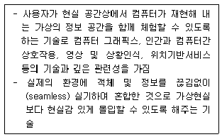
- O2O(Online to Offline)
- BYOD(Bring Your Own Device)
- 실내측위기술(Indoor LBS)
- 스마트 디바이스(Smart Device)
- 증강현실(Augmented Reality)
(정답률: 알수없음)
93. 클라우드 컴퓨팅(Cloud Computing) 서비스를 효율적으로 전달하기 위해서 갖추어야 할 특성으로 가장 옳지 않은 것은?
- 유틸리티 컴퓨팅 서비스를 전달하기 위한 공유 혹은 전용으로 할당된 컴퓨팅 인프라 구조를 갖추고 있어야 한다.
- 셀프 서비스 방식에 따른 서비스와 자원의 자동화된 프로비저닝(Provisioning) 기능을 수행할 수 있어야한다.
- 네트워크를 통한 서비스로의 접근은 제한적 이어야 한다.
- 실제 소비한 자원과 사용시간에 따른 비용 모델을제공할 수 있어야 한다.
- 서버, 스토리지, 네트워크 등 컴퓨팅 자원에 대한필요에 따른 유연한 부하 대처 기능을 제공할 수 있어야 한다.
(정답률: 알수없음)
94. 치열한 글로벌 경쟁하에서 성공적인 네트워크 기업이 되기 위해서는 아웃소싱을 전략적으로 활용할 수 있어야한다. 이러한 전략 중에서 핵심역량 자체는 아웃소싱하지 않는 형태로 자사가 보유한 일정 기술, 역량 등을 분사화하여 조직을 슬림화하는 방법으로 비즈니스화하는 아웃소싱의 형태를 무엇이라 하는가?
- 비용절감형
- 이익추구형 분사형
- 스핀오프형 분사형
- 네트워크형
- 핵심역량 자체의 아웃소싱형
(정답률: 알수없음)
95. 개인적 요인에 의한 의사결정 유형은 의사결정 방식에 따라 아래의 답항과 같이 5가지로 구분할 수 있다. 만약, 경영자 A가 의사결정할 때 정량적인 데이터를 기반으로 한 제안을 선호하고, 의사결정을 하기 전에는 모든 옵션들에 관한 데이터를 주의 깊게 검토하고, 위험을 회피하려는 경향이 강하여 최종 판단까지 시간이 걸린다면, 경영자A의 의사결정 유형으로 가장 옳은 것은?
- 카리스마형
- 사색형
- 회의주의형
- 추종형
- 통제형
(정답률: 알수없음)
96. 디지털시대의 패러다임 특징으로 가장 옳지 않은 것은?
- 시공을 초월한 상거래
- 글로벌(Global)한 경쟁 환경
- e-비즈니스 탄생의 원동력
- 산업간 장벽의 고착화
- 네트워크 효과
(정답률: 알수없음)
97. 다음 글상자에서 설명하고 있는 용어로 가장 옳은 것은?
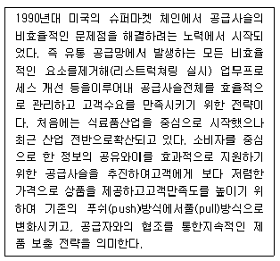
- EPC
- 로제타넷(RosettaNet)
- VMI
- QR
- ECR
(정답률: 알수없음)
98. 다음은 최근 월마트 등 많은 유통기업들이 선택하고 있는 유통혁신전략에 관련된 설명이다. 가장 적절하게 짝지어진 것은?
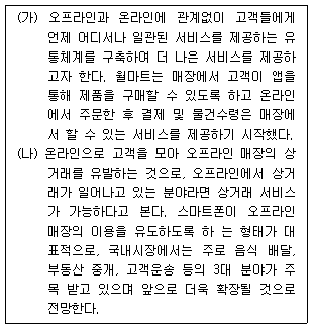
- (가) e-채널화, (나) 매쉬업
- (가) e-채널화, (나) 시핑패스
- (가) 옴니채널, (나) 시핑패스
- (가) 옴니채널, (나) O2O 커머스
- (가) e-채널화, (나) O2O 커머스
(정답률: 알수없음)
99. QR 코드(Quick Response Code)에 대한 설명으로 가장 옳지 않은 것은?
- 격자 무늬 패턴으로 정보를 나타내는 매트릭스 형식의 이차원 코드이다.
- 명칭은 덴소 웨이브(Denso Wave)의 등록상표 Quick Response에서 유래하였다.
- 바코드에 비해 다양한 언어 및 대용량 정보의 저장이 가능하다.
- 인식하는데 있어서 방향의 제한을 갖는다.
- 일반 바코드보다 인식속도와 인식률, 복원력이 뛰어나다.
(정답률: 알수없음)
100. 파괴적 기술(Disruptive technology)에 대한 설명으로 가장 옳지 않은 것은?
- 기술을 활용하여 기존 방식에서 벗어나 새로운 방식으로 일을 처리할 수 있도록 혁신적인 변화를 이끌어 내는 기술이다.
- 기존 고객이 요구하는 당면 과제에 촉각을 곤두세우고 충족시킴으로서 기존 시장을 확고히 이끌어 나가는데 큰 공헌을 하는 기술이다.
- 기존 상거래 시장만 있던 시대에 전자상거래라는 새로운 거래 유형이 생겨나게 한 인터넷과 웹은 파괴적 기술의 사례이다.
- 파괴적 기술은 시간이 흐름에 따라 기술의 보편화 등의 요인으로 인해 보존적 기술로 전환될 수 있다.
- 미래의 고객 요구를 충족시키는 기술로 초기 시장진입시 주목받지 못할 수도 있다.
(정답률: 알수없음)